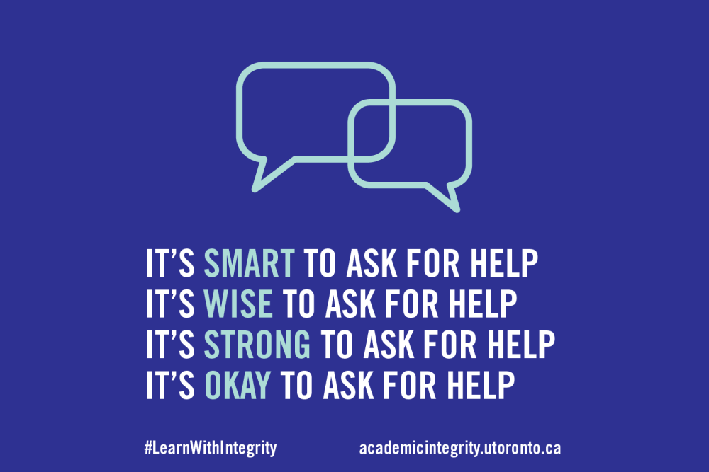

Academic Integrity

Project Overview
- Organization: Innovation Hub
- Role: Data Analysis Researcher
- Team: Shankeri Vijayakumar, Johanna Pokorny
Background
The Innovation Hub is a student-led initiative which uses design thinking to improve the student experience at UofT through partnerships with other departments and divisions. During the Covid-19 pandemic, the Office of the Vice Provost noticed an increase in academic integrity violations in the remote environment and asked the Innovation Hub to do research to better understand this problem. As a Design Researcher, I worked with the Office of the Vice Provost to help answer the question,How can we support students so they can thrive without the help of cheating?
Our project goals were:
- Create a campus-wide communication strategy about academic integrity
- Conduct user research on student needs surrounding academic integrity
- Conduct UX research on how students seek and access academic integrity resources online
Methods
- Focus group sessions
- Remote usability testing
- Stakeholder interviews
Key Findings
Through our research, we found three key themes: 1) the emotional stakes of learning, 2) considering the audience, and 3) varying approaches to integrity. Students shared with us that they were deeply afraid of potentially committing an academic offense unintentionally. The high pressure and expectations placed on them caused a sense of fear, even for innocent students. Students also sought to have more clarity around what academic integrity entails and wanted resources that were student-centered without legalistic language. Lastly, students wanted consistency in approaches to academic integrity. Their understanding of what academic behaviour was acceptable or not greatly depended on the attitudes of their instructor.
Broadly, our recommendations to the university were:
- Be intentional about a holistic and positive approach to academic integrity that emphasizes courage rather than fear
- Focus on students by orienting academic integrity resources and information to be student-centred
- Ensure an open and consistent dialogue around academic integrity that fosters a strong relationship of trust between students and the university
Conclusion
Working on this project was the first time that I was exposed to the deep complexity of a large organization. As a design researcher, I was responsible for empathizing and understanding different and sometimes directly opposing viewpoints and creating solutions that would work for all parties involved. It was meaningful to be able to provide some way for students to share their perspective during a difficult time and I am excited to see what changes the university makes in response to our research. You can read more about this project on the
Innovation Hub website.Thank you for reading!
© 2021 Hai-Dao Le-Nguyen